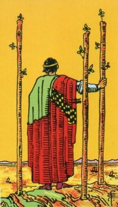
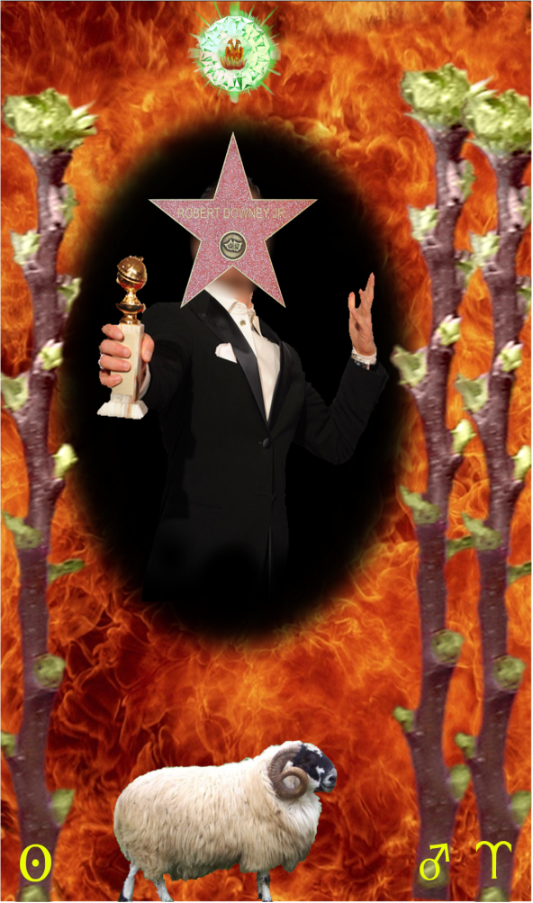
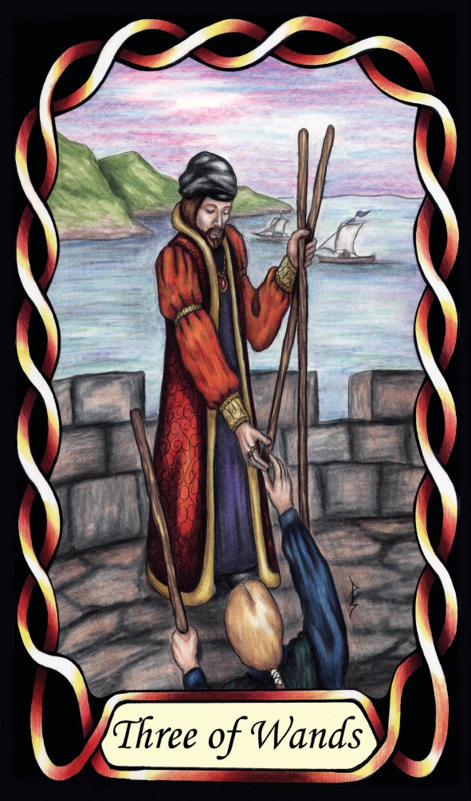

Three of Wands



Sign |
|
Oneself |
|
Sign Ruler |
|
Element |
Fire: change |
Modality |
|
Symbol |
Ram |
Decan |
|
Decan Ruler |
|
Time |
Mar 31 - Apr 8 |
The Legend Aries II
A Journeyman of the Experience. Early pubescence, when hormones drive the males in particular to explore the world. The Sun influence gives this decan a significant measure of magnificence, and rebelliousness. They are confident, perhaps over-confident (as in Phaethon – the Sun card). In later life they will shine with intensity, and stand out from the crowd. Goldschneider calls them a Star, and that comes from the Sun’s rule of the decan.
Inverted: they can be so intent on their own career, that they can often be callous or dismissive of the “little people” around them, specifically, dismissive of the querent.
Example: Robert Downey Jr.
Goldschneider Personology
These people possess drive and ambition, and the confidence of youth and will become well known as a success, whether it be broad world-wide fame, or perhaps just a standout person within their social or work circle
Waite Imagery
A competitive Aries-two with relaxed and confident body language admires his successful business empire. He knows no boundaries, and is, or will become, important and famous – a Legend, in whatever field they choose.
Summary
The Wands typically represents exploration, expansion, and progress. Individuals are taking bold steps, exploring new horizons, and establishing their identity. This card often signifies: